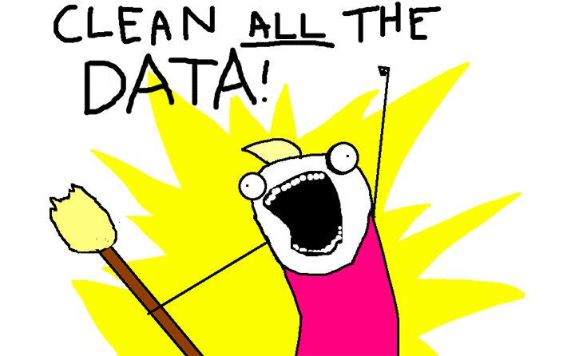

The ABC of Computational Text Analysis
#7 Working with (your own) Data
Alex Flückiger
Faculty of Humanities and Social
Sciences
University of Lucerne
14 April 2022
Recap last Lecture
- describe text as pattern using RegEx
- extract + replace textual parts
- literal:
abc - meta:
\w \s [^abc] * - power of
.*
- literal:
Outline
- learn about available data resources
- use your own textual data
- any text ✔️
- “any” format ✔️
- from anywhere ✔️
Data Sources
What Data Sources are there?
- broadly social
- newspapers + magazines
- websites + social media
- reports by NGOs/GOs
- scientific articles
- economic
- business plans/reports
- contracts
- patents
üëâ basically, any textual documents‚Ķ
Interesting Publishers
- Nexis Uni
- newspaper, business + legal reports (international)
- licensed by the university
- Constellate
- scientific articles of JSTOR across disciplines
- provides an easy dataset builder
- HathiTrust and Project Gutenberg
- massive collection of books (international)
- open, HathiTrust requires agreement
üëâ check out other resources licensed by ZHB
Dataset Search
- Harvard Dataverse
- open scientific data repository
- Google Dataset
Search
- Google for datasets basically
- corpora by the Department of Computational Linguistics @ UZH
üëâ search for a
topic followed by corpus, text collection or
text as data
Some great historical Corpora
ready off-the-shelf, machine-readable
- 1
August speeches by Swiss Federal Councilors
- provided via course repo
- Human Rights Reports by various NGOs
- United Nations General Debate Corpus
üòì There are still not many.
Online Computational Text Analysis
- Impresso
- many historical newspapers + magazines (CH, LU)
- free, requires account
- bookworm HathiTrust
- great filtering by metadata
- credible scientific source
- Google Ngram Viewer
- no filtering option
- useful for quick analysis
Search Techniques
Make your web search more efficient by using dedicated tags. Examples:
"computational social science"nature OR environmentsite:nytimes.com
Data is property üö´
… and has rights too
- copyright may further limit access to high quality data
- check the rights before processing the data

Preparing your own Data
A world
for humans …
… and a jungle of file formats.
Common Conversions
news, press releases, reports from organizations
⬇️
digital native documents .pdf, .docx,
.html
⬇️
convert to .txt
⬇️
scans of (old) documents .pdf, .jpg,
.png
⬇️
Optical Character Recognition (OCR)
machine-readable ✅
Conversion of DOCX
use case: news articles from Nexis
pandocto convert many file formats- download as single articles in
.docxon Nexis
# convert docx to txt
pandoc infile.docx -o outfile.txt
### Install first with
brew install pandoc # macOS
sudo apt install pandoc # UbuntuConversion of native PDF
use case: Swiss party programmes
pdftotextextracts text from non-scanned PDF
# convert native pdf to txt
pdftotext -nopgbrk -eol unix infile.pdf
### Install first with
brew install poppler # macOS
sudo apt install poppler-utils # UbuntuOptical Character Recognition (OCR)
- OCR ~ convert images into text
- extract text from scans/images
tesseractperforms OCR- language-specific models
- supports handwriting + Fraktur texts
- image quality is crucial

Conversion of digitalized PDF
use-case: historical party programmes
- extract image from PDF + improve contrast
- run optical character recognition (OCR) on the image
# convert scanned pdf to tiff, control quality with parameters
convert -density 300 -depth 8 -strip -background white -alpha off \
infile.pdf temp.tiff
# run OCR for German ("eng" for English, "fra" for French etc.)
tesseract -l deu temp.tiff file_out
### Install first with
brew install imagemagick # macOS
sudo apt-get install imagemagick # UbuntuConfigure ImageMagick properly
Windows Ubuntu users need to execute the following
# disable security policy for Windows
sudo sed -i '/<policy domain="coder" rights="none" pattern="PDF"/d' /etc/ImageMagick-6/policy.xml
# increase memory limits
sudo sed -i -E 's/name="memory" value=".+"/name="memory" value="8GiB"/g' /etc/ImageMagick-6/policy.xml
sudo sed -i -E 's/name="map" value=".+"/name="map" value="8GiB"/g' /etc/ImageMagick-6/policy.xml
sudo sed -i -E 's/name="area" value=".+"/name="area" value="8GiB"/g' /etc/ImageMagick-6/policy.xml
sudo sed -i -E 's/name="disk" value=".+"/name="disk" value="8GiB"/g' /etc/ImageMagick-6/policy.xml#LifeHack: Make a PDF searchable
use case: scanned book chapters
# output searchable pdf instead of txt
convert -density 300 -depth 8 -strip -background white -alpha off -compress group4 \
file_in.pdf temp.tiff
tesseract -l deu temp.tiff file_out pdfScraping PDF from Websites
use case: Swiss voting booklet
wgetto download any files from the internet
# get a single file
wget EXACT_URL
# get all linked pdf from a single webpage
wget --recursive --accept pdf -nH --cut-dirs=5 \
--ignore-case --wait 1 --level 1 --directory-prefix=data \
https://www.bk.admin.ch/bk/de/home/dokumentation/abstimmungsbuechlein.html
# --accept FORMAT_OF_YOUR_INTEREST
# --directory-prefix YOUR_OUTPUT_DIRECTORYInteresting Resources
- Party
Programmes across Europe
- covers over 1000 parties from 1920 until today in over 50 countries
- Swiss
voting booklets
- from 1978 until today
- 1 August speeches by Swiss Federal Councillors
- Nestlé Annual Reports
- ‚Ķ any organization of your interest üëç
Basics of Batch Processing
perform the same operation on many files
# loop over all txt files
for file in *.txt; do
# indent all commands in loop with a tab
# rename each file
# e.g. a.txt -> new_a.txt
mv $file new_$file
donePerform OCR for many PDF
for FILEPATH in *.pdf; do
# convert pdf to image
convert -density 300 $FILEPATH -depth 8 -strip \
-background white -alpha off temp.tiff
# define output name (remove .pdf from input)
OUTFILE=${FILEPATH%.pdf}
# perform OCR on the tiff image
tesseract -l deu temp.tiff $OUTFILE
# remove the intermediate tiff image
rm temp.tiff
donePreprocessing → RegEx

Questions?
In-class: Exercises I
- Make sure that your local copy of the Github repository KED2022 is
up-to-date with
git pull. Check out the data samples inmaterials/dataand the scripts to extract their text inmaterials/code. - Install the missing tools with the commands given on the respective
slides:
pandoc, imagemagick, poppler. - Apply the commands to reproduce on the given data. Test them on your own data. Check the resources. Ask questions. Think about your mini-project.
In-class: Exercises II
- Use
wgetto download cogito and its predecessor uniluAKTUELL issues (PDF files) from the UniLu website. Start with downloading one issue first and then try to automatize the process to download all the listed issued using arguments for thewgetcommand. - Convert the cogito and uniluAKTUELL PDF files into
TXT files using
tesseract. Try with a single issue first and then write a loop to batch process all of them. - What is the University of Lucerne talking about in its issues? Use the commands of the previous lectures to count the vocabulary.
- Do the same as in 3.), yet analyze the vocabulary of cogito and uniluAKTUELL issues separately. Does the language and topics differ between the two magazines?
In-class: Exercises III
- Use
wgetto download a book from Project Gutenberg and count some things (e.g., good/bad, joy/sad). wgetis a powerful tool. Have a look at its arguments and search for more examples in tutorials on the web.
Resources
Make a more sophisticated script for PDF-to-TXT conversion
- Erick Peirson. 2015. Tutorial: Text Extraction and OCR with Tesseract and ImageMagick - Methods in Digital and Computational Humanities - DigInG Confluence. online